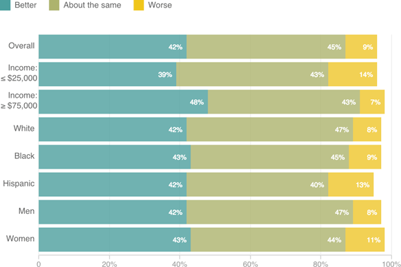

“Think of your parents when they were your age. Would you say you are in better health than they were, in worse health than they were, or about the same?”

Notes
- Values for "Don't Know/Refused" are not included in this chart.
- Income figures refer to annual household income.